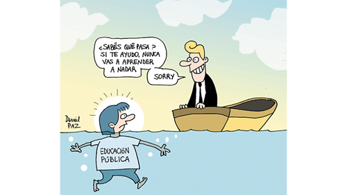

Real Chubut - Agencia de Noticias


Escuela de negocios

Una investigación de la Ctera sobre la privatización de la educación denuncia que, desde la asunción del macrismo, las corporaciones avanzan sobre el sistema público. ONGs, integradas por grandes empresas y bancos, penetran en escuelas y universidades para transformar la educación en una mercancía
Desde la asunción del macrismo, las corporaciones –sus fundaciones y ONG– entraron en escuelas y universidades. La educación es un gran nicho de negocios y la Argentina, un mercado a conquistar; pero el fenómeno tiene además, otros brazos: las grandes empresas han estado interesadas desde siempre en el campo educativo, con el objetivo de que los alumnos puedan ser entrenados para sus necesidades productivas. Finalmente, en lo político, la educación es un factor a controlar, en la medida en que a través de ella se introducen en las personas ciertas lógicas, se apaga o aviva el pensamiento crítico. Todo este proceso es abordado en el libro La privatización educativa en la Argentina, resultado de una investigación que realizó la Ctera en el marco de la Internacional de la Educación. La doctora en Educación Adriana Puiggrós, que trabajó en el estudio como asesora, habló con PáginaI12 sobre estos temas. Algunos de sus aspectos son bien conocidos, como el aumento de las familias que inscriben a sus niños en escuelas privadas. Otros resultan novedades absolutas, como el concepto de home-schooling y los criterios que apuntan al reemplazo de los docentes por animadores formados en seis meses.
–¿Cuál es el sujeto de la educación? ¿Y cuál el que cree está viendo el macrismo?
–Hablar del sujeto de la educación es hablar de algo muy complejo, porque es la sociedad en su conjunto, y la sociedad no es un ente homogéneo. Toda la sociedad es sujeto de educación, y más aún en estos tiempos en que nos educan todo el día, todo el tiempo, en que penetran a través de nuestros oídos, de nuestros ojos, en un proceso educativo constante. Respecto a lo que ve el macrismo... eso es lo que ve: un gran mercado constituido por todos los aspectos en que la sociedad puede ser penetrada con mensajes que puedan transformar a las personas en clientes, en un símil de ciudadano que en realidad dista mucho del ciudadano imaginado incluso por el liberalismo. No es el ciudadano de la república liberal, es el ciudadano del país ordenado en función de los intereses de las grandes corporaciones.
–En ese escenario, ¿cómo juega la educación formal?
–Ahí tenemos una lucha profunda entre quienes pensamos que la educación tiene que cambiar teniendo en cuenta las transformaciones tecnológicas, políticas... porque hay un enorme cambio que sufre la sociedad en cuanto a sus desarticulaciones culturales, desde que tener que adaptarse a un ritmo brutal, en mirar la televisión, hablar con los demás, dar respuesta, correr, es decir desde otra concepción del tiempo y por lo tanto de la historia, hasta los cambios en el lenguaje y en los valores. Por eso los docentes estamos frente a una situación en la que cobra más fuerza que nunca la idea de Paulo Freire de una educación dialógica: el proceso educativo tiene que ser un diálogo, porque las nuevas generaciones tienen muchos conocimientos que no son simplemente de la tecnología en el sentido mecánico del término, sino que acceden a la cultura desde una lógica distinta. Nosotros, mi generación y una o dos más, accedemos a los cambios que se van produciendo desde una lógica anterior, de la modernidad, y lo que sucede hoy está bastante más allá de la modernidad. Para el docente es muy importante no perder el lugar del educador, que haya una educación dialógica no quiere decir que borre el lugar del educador, porque la relación educador-educando es una relación de diferencia, cada uno tiene otra conformación cultural. Un niño pequeñísimo que toma el celular y entiende su lógica no está realizando una operación simplemente mecánica: está comprendiendo una serie de cosas. Cuando además el niño consigue el celular pataleando, forzando a los padres, y los padres se resignan y se lo dan, ahí estamos frente a una ruptura de un vínculo de enseñanza aprendizaje que es complicado.
–El libro habla del avance privatizador en la Argentina. ¿Qué encontraron los investigadores?
–En la Argentina tenemos un punto de arranque para entender esta época, que es el Congreso Pedagógico de 1985. Ese congreso fue convocado por Raúl Alfonsín con un impulso democratizador, pero allí todas las fuerzas políticas acordaron que la educación en la Argentina no iba a ser ya pública o privada, sino que iba a ser o pública de gestión privada o pública de gestión estatal. Esto fue muy importante porque a partir de ese momento se perdió ese valor tan profundo que tenía la sociedad argentina, puesto en la educación pública como sinónimo de educación estatal. En la Argentina tuvimos un pacto como sociedad, un pacto hecho a fines del siglo XIX y que duró más de un siglo, respecto a que para la existencia de la Nación era necesario sostener un sistema de educación pública, y que su responsable principal sería del Estado.
–Desde ese lugar avanzó la privatización después del ‘85...
–Antes, el gobierno de Arturo Frondizi abrió las puertas al desarrollo de muchísimas universidades privadas. Y no estoy diciendo que no deba haber universidades privadas, sino que a partir de ese momento empezó a haber universidades empresariales que fueron las que dieron origen a este sector de CEOs que nos está gobernando. Universidades que no son sólo las tradicionales, y que a partir de los ‘90 van a ser grandes formadoras de la actual elite. La dictadura golpeó muy fuerte a toda la educación, pero no desarmó el sistema. Siguió habiendo educación pública, educación privada y sistema escolar. Pero fue en aquel Congreso Pedagógico del ‘85, cuando el conjunto de las fuerzas políticas definieron que la educación pública va a ser pública de gestión estatal o pública de gestión privada, donde le pegaron un golpe muy fuerte en el orden de lo ideológico a aquel pacto de la sociedad argentina respecto a la centralidad de la educación pública para sostener la Nación. Así llega la década de los ‘90, en la se formó la actual elite neoliberal en las universidades privadas y en la que además, y esto es central, lo que sucedió es que empezaron a entrar fundaciones y ONGs. Van entrando a la Argentina y van silenciosamente ubicándose, creciendo mucho en los momentos de crisis, ocupando lugares que el Estado no ocupó. Con el kirchnerismo se retrajeron, y con el gobierno de Cambiemos avanzaron para ocupar todos los espacios de lo público.
–¿De dónde vienen esas fundaciones?
–La mayor parte son norteamericanas y también hay europeas; básicamente, son de las corporaciones. Todos los grandes bancos tienen sus fundaciones que trabajan en educación. La mayor parte de los campus informáticos de las universidades públicas están administrados por fundaciones de bancos. La cuenta sueldo de las universidades públicas está administrada por entidades financieras privadas. Desde la fundación de Techint hasta la fundación de cualquier banco que uno quiera tomar... encontrás desde la fundación Cimientos de Blaquier, o sea Ingenio Ledesma, hasta la fundación u ONG Enseñar por Argentina, que es filial de Teach for América que es filial de Teach for All, y basta con mirar su página web para ver que son las grandes corporaciones las que están detrás. Hoy hay muchas así en la Argentina.
En el libro que publicó Ctera, es una investigación hecha por Myriam Feldfeber, Miguel Duhalde y asesorado por Susan Robertson, que es una muy importante pedagoga de Cambridge, se hace un puntual listado y explicación de cuáles son las ONG y fundaciones que están trabajando en la mercantilización de la educación pública y también golpeando sobre las privadas para tercerizar.
–¿Qué alcance tiene este proceso? ¿Es propio de Argentina, de la región o se ve en todo Occidente?
–En todo Occidente, por lo menos.
–¿Con qué mecanismos el gobierno de Macri les abrió las puertas?
–Con el mecanismo del desgaste. El Gobierno supone que va a desgastar a los docentes, supone que pueden no cumplir las leyes y que, poco a poco, va a ir instalando su propio orden. El desgaste consiste en no llamar a las paritarias. Esto es muy fuerte, porque negar la paritaria no es sólo negarse a discutir el salario, sino negarse a discutir las condiciones de trabajo que hacen a la enseñanza: que un docente tenga cinco cargos en vez de uno, que no se discutan las condiciones edilicias, entonces estallan las escuelas, que no se discutan las condiciones pedagógicas. ¿Por qué no quieren discutir nada? Porque si la educación en realidad es un elemento del mercado, no hay nada que discutir. Lo único que tenés que discutir es el precio. La otra cosa es tercerizar funciones: tercerizar la formación docente, la comida, los tests, para armar un supermercado de la educación, donde vos vas y compras lo que querés y en última instancia, para la concepción que trata de imponer la OCDE, llegás al home-schooling, es decir al chico sentado en la casa con la computadora adonde llegó el paquete de contenidos y el paquete de evaluación, y en todo caso hay uno de estos líderes o acompañantes formados por estas ONG.
–¿Cómo es ese modelo del home-schooling?
–Es el tipo de educación que en Estados Unidos llegó a un pequeño porcentaje, pero que marca estadística. En la Argentina también empezamos a verlo: familias que deciden no mandar a los chicos a ninguna institución, para que se eduquen en casa. O se juntan dos o tres familias y contratan a uno de estos líderes que acompaña a los chicos: compran los paquetes ya hechos de contenido. Entonces, ahí el Estado ya se tiene que retirar. La educación planificada, organizada y basada en un acuerdo social y en donde el Estado tenga un papel principal es lo contrario del libre mercado en la educación, de la misma manera que en el libremercado de la educación no entra la idea de la educación como derecho.
–La investigación también señala la entrada de las fundaciones y ONG en las universidades.
–Cuando Google pone un aula informática no solamente está poniendo el hardware: está introduciendo una concepción de la educación, de contenidos, porque es socia de quien los produce, o la editorial Pearson, inglesa, productora del test PISA que se aplica en Argentina con resultados que dañan al país. No por el lugar donde quede la Argentina en el ranking que ellos hacen, sino por el uso político que se hace en contra del pueblo, de las diferentes regiones del país. A favor de una idea unitaria, de la vieja oligarquía que coincide hoy con la mentalidad de los dueños de las grandes corporaciones. Aplican una prueba con la que indagan los mismos contenidos, acá o en cualquiera de los 60, 80 o 100 países donde se aplica.
–¿Por qué tiene ese nivel de expansión el test PISA?
–Porque es la Organización para la Cooperación y el Desarrollo Económico (OCDE) la que encarga a Pearson esta prueba. La OCDE ha sacado una resolución a fines de los ‘90 por la cual la educación pasó a ser un bien transable, y exige a los países miembro que levanten todo tipo de limitación a la compraventa de educación. Es la aplicación del libre mercado a la educación, también con la misma idea de que el mercado encontrará su propio equilibrio. ¿Qué podría pasar con la libre compraventa de educación sin ningún tipo... no ya de restricción del Estado, sino de acuerdo social?
–Una primera manera de entender el avance de las fundaciones y ONG es entonces el negocio. ¿Y en lo político?
–En lo político hay un objetivo, pero sobre todo una concepción. Cuando la gobernadora de la provincia de Buenos Aires dice que los pobres no aprenden y entonces no vale la pena hacer universidades para pobres, refiriéndose a las 20 nuevas universidades que se hicieron en el país durante el kirchnerismo, ahí hay una concepción profunda. Es la concepción que siempre tuvo la oligarquía argentina, y que ahora encaja perfectamente en este gobierno integrado por administradores y accionistas de las grandes empresas.
–Los datos del libro señalan que el país tiene 11 millones de estudiantes, con un 71 por ciento dentro del sistema estatal y un 29 en el privado. Es decir que hay un alto porcentaje de chicos, sobre todo en la primaria, que van a la escuela pública. Pero esa escuela pública, da la impresión, ya no puede reunir a todos los sectores sociales.
–Todavía hay diversos sectores, pero en los últimos treinta años hemos visto un corrimiento a la escuela privada, también con esta mentalidad, con la idea de que es un producto más caro. Por eso pongo el acento en el momento en que se decide que la escuela publica puede ser privada o estatal. Porque en los momentos en que mejora la situación económica, la clase media tiende a mandar a los chicos a la escuela privada, y en los momentos en que empeora la situación económica, los sectores populares no pueden sostener a los chicos en la escuela pública por diversas razones, porque trabajan, etc., y los mandan a la escuela parroquial o a la ONG sostenida por una cooperativa. Y esto va más allá de la calidad de una o de otra, porque hay escuelas públicas y privadas buenas, más o menos, y malas; no hay estadística alguna que demuestre que hay una diferencia de calidad entre la escuela publica y la escuela privada.
–La investigación fue hecha con la Internacional de la Educación
–Sí. La Internacional de la Educación ya la hizo en África y en Asia. En América Latina se realizó en Colombia, Brasil, Uruguay y en Perú. Otra cosa es que en Estados Unidos hay mucha investigación. En realidad, donde más investigación hay sobre el tema de la privatización de la educación pública es en los Estados Unidos.
–¿Para qué sirve hacer estas investigaciones?
–En primer lugar para saber, para tomar conciencia de lo que está ocurriendo. Para que sepamos que nos están considerando una mercancía, que muchas de las decisiones que se toman tienen que ver con ponernos un precio, para conocer los aspectos más negativos de los cambios civilizatorios que estamos viviendo. Si uno cree que es posible que los pueblos orienten el cambio civilizatorio hacia un espacio democrático de dignidad y de creación de productividad, si uno cree que ese futuro es posible, tiene que tener conciencia de que lo contrario también es posible, y que lo contrario es lo que está ocurriendo en Brasil, lo que nos lleva a preguntarnos por qué el pueblo a veces, algunos sectores del pueblo, votan contra sí mismos. Ahí es donde cabe el lugar de la educación en el sentido amplio, en el sentido de que el proceso educativo abarca a toda la sociedad, no es solamente el sistema escolar. Ahora: tenemos que cuidar el sistema escolar, cuidar la educación pública y cuidar la escuela, porque el otro elemento junto con el home-schooling, con esa idea, es la desescolarización. Hay teóricos de la desescolarización que son asesores de este Gobierno, que son entre otros lo que han redactado la ley de fundación de la Unicaba, la Universidad de la Ciudad de Buenos Aires, ley dentro de la cual está escondida la disolución de los institutos de formación docente. Ahí la idea básica que tienen es la de que la escuela es un impedimento para el desarrollo de la educación, que la escuela es una institución de siglo XX, del siglo XIX y junto con la escuela, el docente. Es decir, barren a la escuela y al docente.
Fuente: Pagina12